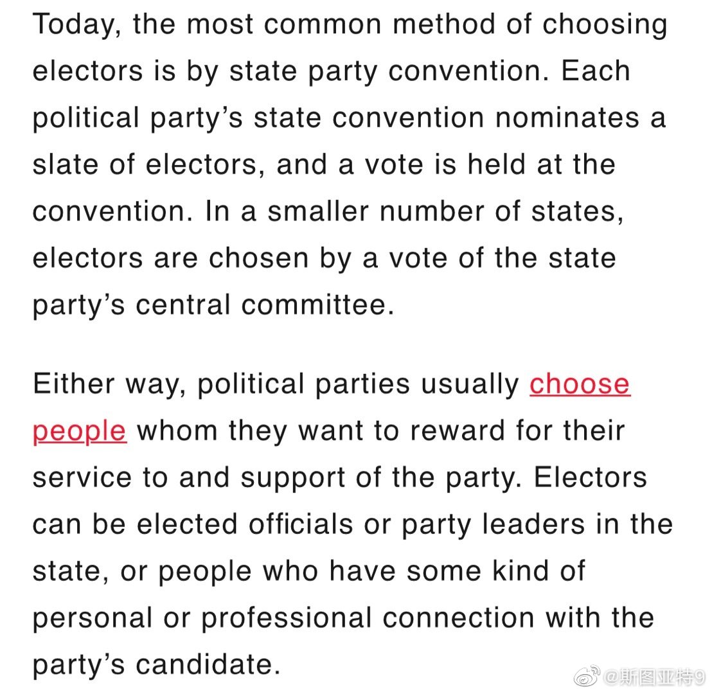
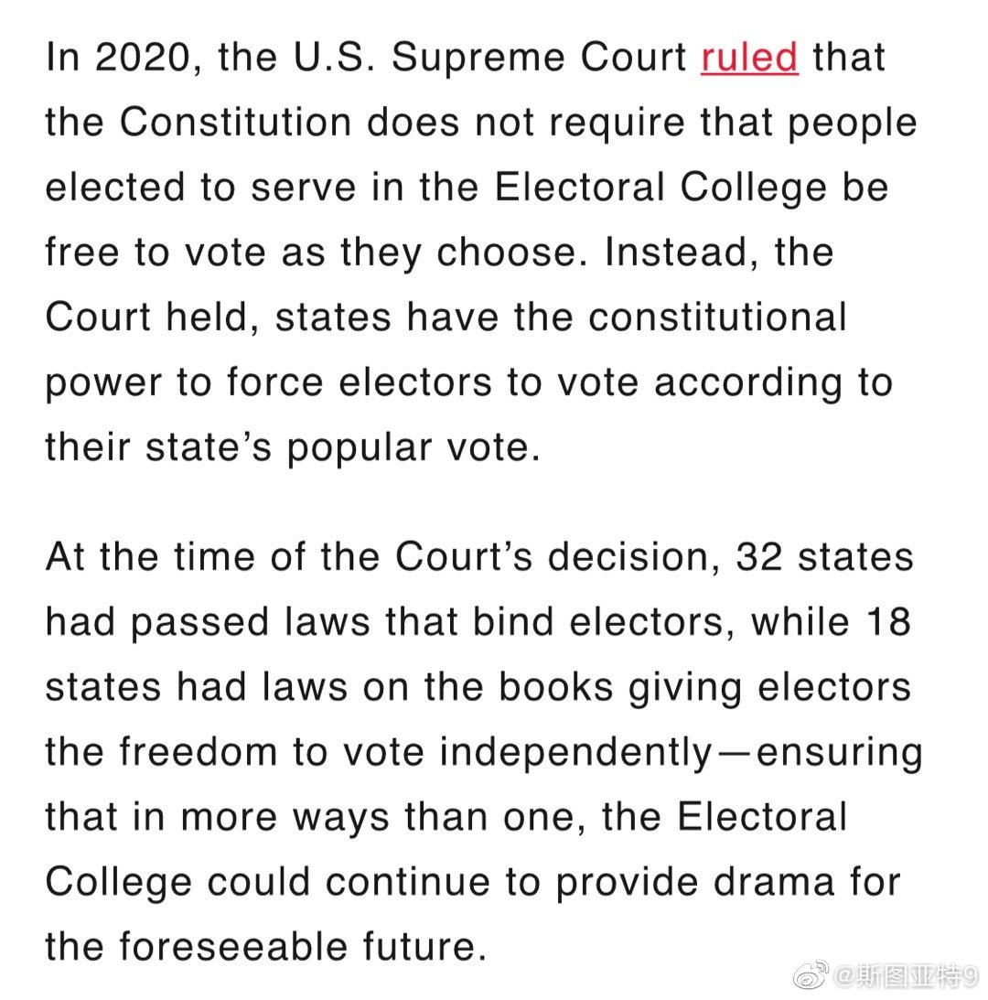

回复@向上游的鱼03:已经基本上就是邪教了。“天选之人”都出来了。几个星期之前听说这个词的时候我都震惊了。//@向上游的鱼03:华川铁粉现在依然相信懂王最后会赢，跟进了邪教、传销组织一样//@斯图亚特9:确实是0。@斯图亚特9:选举人是获胜政党指定的。各州有权要求他们按照选举结果投票。有些州还可以在选举人跳票之后更换选举人。2016年的川普被共和党的选举人跳了2票，民主党的候选人倒是跳了希拉里几票。2020年的拜登有可能被任何一个民主党选举人跳票吗？ 反正我觉得可能性是0。 